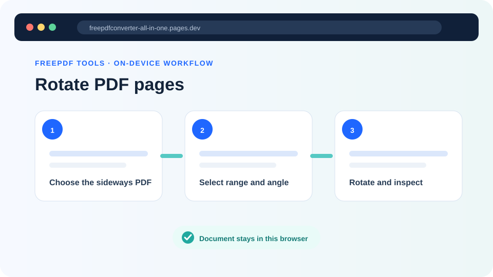
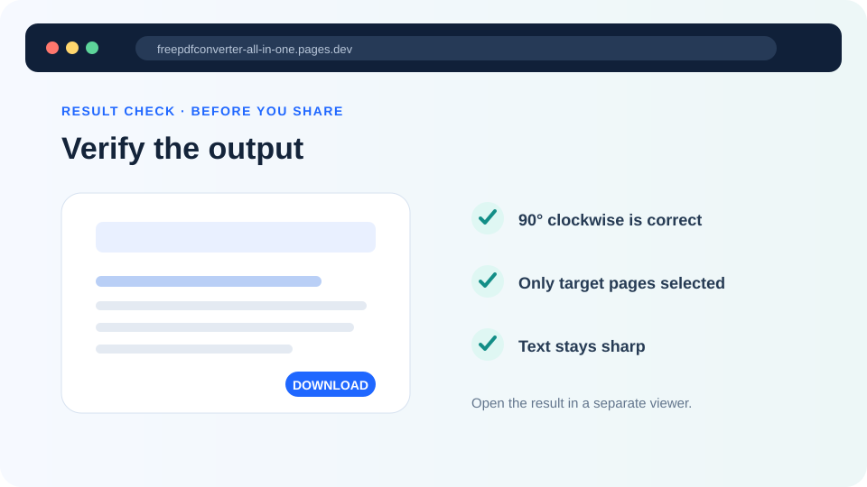

How to rotate PDF pages without losing quality
Correct scanned pages that display sideways or upside down without intentionally converting text and vector content into images.
Updated August 11, 2026 · By FreePDF Tools · 5 minute read


How PDF page rotation works
A PDF page can contain a rotation setting that tells readers how to display its existing content. Changing that setting is different from rendering the entire page as an image and rotating the resulting pixels. Text, links and vector drawings therefore avoid an intentional raster conversion when the page's rotation value is adjusted.
Rotation is cumulative. If a page already has a 90° rotation and you apply another 90°, its final rotation becomes 180°. When possible, return to the original PDF if you need to retry; repeated edits make it harder to remember which rotation has already been applied.
Choose 90°, 180° or 270°
| Current appearance | Choose | Effect |
|---|---|---|
| Page needs a quarter-turn to the right | 90° clockwise | Top edge moves to the right |
| Page is upside down | 180° | Page turns half a circle |
| Page needs a quarter-turn to the left | 270° clockwise | Equivalent to 90° anticlockwise |
If you are uncertain, test one page first. Open the downloaded result before applying the same angle to a long page range.
How to rotate PDF pages
- Open the Rotate PDF tool and select your document.
- Choose the required rotation angle.
- Leave Rotate all pages selected if every page is wrong.
- If only some pages need correction, clear that option and enter the first and last affected page.
- Select Rotate & download, then inspect the new file.
Fix a sideways PDF now
Rotate every page or a selected range locally in your browser.
Rotate one page or several separate pages
To rotate one page, clear Rotate all pages and use the same number for From and To. The current tool rotates one continuous range at a time. For separate pages with different directions, start from the original document and perform the necessary operations carefully, checking each downloaded result.
Printed page numbers can differ from PDF page positions when a cover or contents page is present. Use the PDF reader's page-position indicator to identify the actual range.
Common rotation problems
| Problem | Likely cause and fix |
|---|---|
| The page turned the wrong way | Use 270° clockwise for a left turn, or return to the original and select the correct angle. |
| Only part of the document is wrong | Clear Rotate all pages and enter the affected PDF page range. |
| The visible scan remains oddly aligned | The scan may include large margins or skew inside the page. Rotation changes direction; it does not crop or deskew the scanned image. |
| The PDF cannot be loaded | The document may be encrypted or malformed. Verify it in a trusted reader, then use Unlock PDF with the known password if permitted. |
| A digital signature is no longer valid | Any document modification can invalidate signatures. Preserve the original signed PDF. |
Does PDF rotation change file quality?
The tool changes page rotation and copies pages into a new PDF; it does not deliberately render every page to JPG. This protects the sharpness of text and vector elements. As with other PDF edits, advanced document-level features may not be identical in the newly created output, so keep the source file when forms, bookmarks, layers or signatures are important.